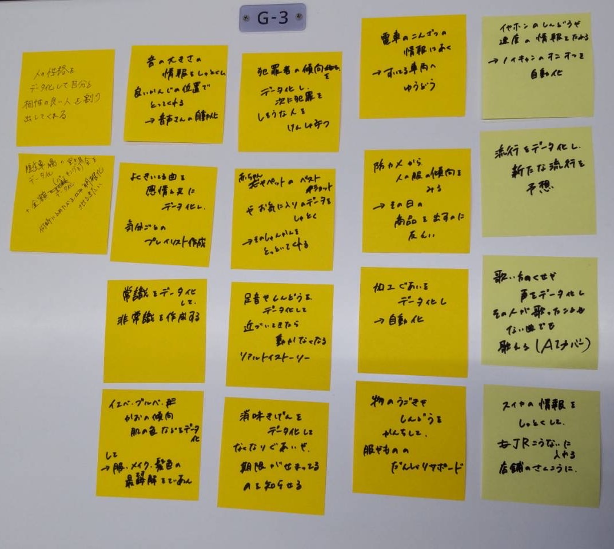

デザイン演習Ⅲ 第3回
1.IoT(データを保存)で何ができそうか？
１つのモノにさまざまな機能を持たせることができる。
同じ動作を繰り返し行うことができる。
モノを遠隔で操作できる。全自動化。
データの可視化ができる。
ex）感情をデータ化し、気分ごとのプレイリストの作成。
車両ごとの混雑情報をデータ化し、空いてる車両へ誘導。etc.(ポストイット画像参照)
2.どのようなデータを保存していくと価値あるものになるか？
ヒトの行動・習慣
顧客１人１人のニーズ(金額・商品の質・好みetc...)
適応動作
写真や動画
音や光、気温などの環境
3.グループワークした内容(ポストイット画像)
